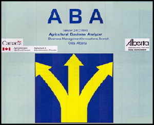
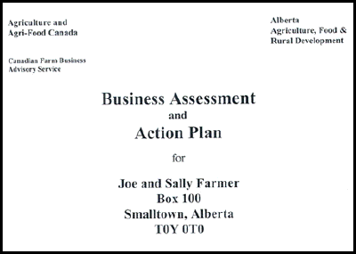

Farm Financial Consulting
In the financial analysis area, Art works with farmers to analyze their operations using a software package called the Agricultural Business Analyzer or ABA (developed by Alberta Agriculture). Included in this analysis will be a "chart" for the future of an operation that seeks to be sustainable, economically, environmentally, family and/or staff wise and animal welfare wise.

A farm business plan includes two main parts, a narrative and a financial analysis. The narrative describes where the farm is now (business profile, enterprises such as grain or cattle, size, marketing etc.) and a financial analysis of the present situation. Then it lists the short and long term goals of the farmers and examines alternatives for the future based on those goals. Once the farmers have chosen their preferred alternative it is described in detail and a financial analysis of that alternative is done. Presuming that the chosen alternative is viable, then an action plan is outlined to achive the stated goals.
ABA is a comprehensive analysis and forward projection program that provides farmers and lenders all the financial information that they are likely to need to make decisions about their existing operation or possible future direction for a farm.
Samples of Work
A generic sample Joe and Sally Farmer Farm Business Plan is available from Art upon request. No other details can be provided due to client confidentiality.
